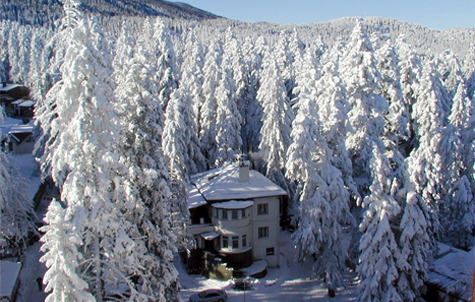

Отдых в Болгарии зимой
Понедельник, 06 февраля 2017
Болгария – это одно из сравнительно недорогих и популярных туристических направлений, которое
выбирают туристы всего СНГ, а также восточной Европы. Дружественный менталитет этнически
близкого народа, схожесть языков, большой процент русскоязычного населения и умеренная стоимость
проживания и услуг позволяют Болгарии сохранять свои позиции у отдыхающих из России. Как новый
член Евросоюза, страна имеет большие перспективы для развития экономики и торговли, в том числе
в сфере туристического бизнеса.
Отдых в Болгарии зимой имеет свои прелести. В этой стране находятся 4 курорта, где можно насладиться катанием по заснеженным трассам на лыжах, сноуборде и подъемниках на высоте от 700 до 2700 метров над уровнем моря. Мягкий континентальный климат Болгарии не имеет резких температурных перепадов. Самый холодный месяц в году – январь, когда температура воздуха находится на уровне +2С. Снежные покровы на горных массивах сохраняются почти 130 дней, достигая толщиной от 1,5 до 2 метров.

Банско – это один из новых достопримечательностей туристической Болгарии. Курорт призван одним из самых инвестируемых и быстро развивающихся восточной Европе. Располагается у подножья Пиринских гор в 160 км от Софии. Курорт располагает шестью заснеженными трассами общей длиной 14 км на высоте от 2000 до 2500 км. Здесь имеются участки для всех уровней сложности для лыжников, а также подъемники. Снежный покров достигает 2 м.
Условия для зимнего отдыха в Болгарии
Отдых в Болгарии зимой имеет свои прелести. В этой стране находятся 4 курорта, где можно насладиться катанием по заснеженным трассам на лыжах, сноуборде и подъемниках на высоте от 700 до 2700 метров над уровнем моря. Мягкий континентальный климат Болгарии не имеет резких температурных перепадов. Самый холодный месяц в году – январь, когда температура воздуха находится на уровне +2С. Снежные покровы на горных массивах сохраняются почти 130 дней, достигая толщиной от 1,5 до 2 метров.
Основные горнолыжные курорты и их достопримечательности
Основные горнолыжные курорты Болгарии пользуются достаточно большой популярностью у лыжников. Стоимость здесь значительно ниже, по сравнению с другими популярными курортами Европы. Цены на услуги, включая скай-пасс, колеблются от 21 до 200 долларов на одного человека. Туристы могут рассчитывать и на более демократичные цены в рамках горящих путевок и акционных предложений от туроператоров. Еще одно достоинство горнолыжных курортов здесь – сравнительно близкое расположение к Софии, Пловдиву и другим крупным городам и аэропортам.Основные направления для отдыха в зимнее время представляют:
1) Банско
Банско – это один из новых достопримечательностей туристической Болгарии. Курорт призван одним из самых инвестируемых и быстро развивающихся восточной Европе. Располагается у подножья Пиринских гор в 160 км от Софии. Курорт располагает шестью заснеженными трассами общей длиной 14 км на высоте от 2000 до 2500 км. Здесь имеются участки для всех уровней сложности для лыжников, а также подъемники. Снежный покров достигает 2 м.